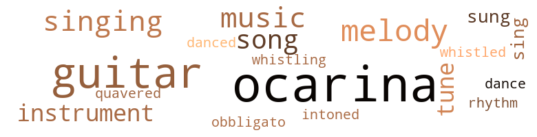
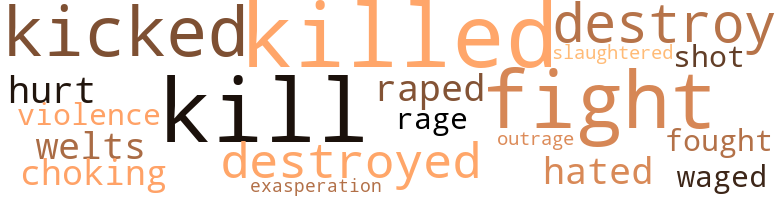

Empire Star, by Delany, Samuel R. (1966)
84 music-related terms matched in this text.
Most frequent terms in this topic: ocarina (23); guitar (17); melody (7); music (6); singing (5)
dance.n.01
Definition: an artistic form of nonverbal communication
| word | sentence |
|---|---|
| dance | But there are at least seven giant stars - giant compared to Sol - doing a rather difficult , but beautiful , dance around one another out there . " |
dance.v.03
Definition: skip, leap, or move up and down or sideways
| word | sentence |
|---|---|
| danced | She kissed his cheek , then danced back from a halfhearted swipe Di ' k made with his horns . |
guitar.n.01
Definition: a stringed instrument usually having six strings; played by strumming or plucking
| word | sentence |
|---|---|
| guitar | He seemed to have seen every flash of light on a window , every leaf shadow on a screen door , that I had ever seen ; done everything I had ever done , from playing the guitar to laying over for a couple of weeks on a boat in Arkansas Pass , Texas . |
| guitar | Ron 's guitar . |
| guitar | Only this was a guitar played differently , much faster . |
| guitar | The singing stopped ; the guitar stopped . |
| guitar | She looked up from her guitar , and the face - it was a beautiful face , fine featured , dark , with heavy brown hair that fell to one shoulder-twisted in silent terror . |
| guitar | She backed against the wall of crystal blocks , her hand flat on the blond face of the guitar , fingers sliding across the wood and leaving paths of glimmer on the varnish . |
| guitar | Suddenly she clamped her eyes , let the guitar fall face down in her lap , and clapped her hands on her ears . |
| guitar | She picked up the guitar . |
| guitar | But singing and playing the guitar , which is what I really like to do , I picked up on my own . " |
| guitar | Suddenly she rose up on her knees , leaning over her guitar . |
| guitar | " All right , " she said , and picked up her guitar . |
| guitar | I have a guitar inside - I 'll get it out and we can play together , hev ? " |
| guitar | He was holding a guitar . |
| guitar | Bon began to tune the guitar . |
| guitar | He put the guitar down . |
| guitar | He was still holding the guitar by the neck . |
| guitar | He sat down on a crate , and put his guitar on his lap , and pulled from it a modal chord . |
music.n.01
Definition: an artistic form of auditory communication incorporating instrumental or vocal tones in a structured and continuous manner
| word | sentence |
|---|---|
| music | You write books , make music , paint pictures . |
| music | Then he heard music . |
| music | It might as well have been still and listening as the youngsters made their music and the ship hove forward . |
| music | I could tell you how , at the final emancipation of the Lll , when the crowd silenced before the glorious music , a man named Ron , who as a boy had himself sung for the Lll while a shuttle-bum , tears quivering in the corners of his eyes , his throat half-blocked with emotion , both then and now , turned to the Lll standing next to him in the tremendous crush of people and whispered - indicating not only the straining attentions around him , the incredible effect of the brief song , but as well the shattering culmination the emancipation represented - " Have you ever seen anything like it before ? " |
| music | Can ' make no music . " |
| music | They like music and it will make them happy . " |
musical_instrument.n.01
Definition: any of various devices or contrivances that can be used to produce musical tones or sounds
| word | sentence |
|---|---|
| instrument | The tune was the first song he had ever learned on the instrument . |
| instrument | Jo watched himself remove the instrument from his pouch and place it to his own lips , saw his lids close , one over his left eye , one over the glittering presence that had replaced his right . |
| instrument | He 'd heard an instrument like that , a long time ago , back when he 'd been a shuttle-bum . |
| instrument | He heard the song through once , and the melody repeated , so he took his instrument and began to play with the singing . |
obbligato.n.02
Definition: a part of the score that must be performed without change or omission
| word | sentence |
|---|---|
| obbligato | Ron 's obbligato wove around the melody Jo coaxed from the ocarina . |
ocarina.n.01
Definition: egg-shaped terra cotta wind instrument with a mouthpiece and finger holes
| word | sentence |
|---|---|
| ocarina | He had : a waist-length braid of blond hair ; a body that was brown and slim and looked like a cats , they said , when he curled up , half asleep , in the flicker of the Field Keeper 's fire at New Cycle ; an ocarina ; a pair of black boots and a pair of black gloves with which he could climb walls and across ceilings ; gray eyes too large for his small , feral face ; brass claws on his left hand with which he had killed , to date , three wild kepards that had crept through a break in the power fence during his watch at New Cycle ( and in a fight once with Billy James - a friendly scuffle where a blow had suddenly come too fast and too hard and turned it Into for real - he had killed the other boy ; but that had been two years ago when he had been sixteen and he did n't like to think about it ) ; eighteen years of rough life in the caves of the satellite Rhys attending the underground fields while Rhys cycloided about the red giant Tau Ceti ; a propensity for wandering away from the Home Caves to look at the stars , which had gotten him in trouble at least four times in the past month , and in the past fourteen years had earned him the sobriquet , Comet Jo ; an uncle named Clemence whom he disliked . |
| ocarina | And later , when he had lost all but , miraculously , the ocarina , he thought about these things and what they had meant to him , and how much they defined his youth , and how poorly they had prepared him for manhood . |
| ocarina | He did n't relax , but he took out his ocarina and played on it until a door opened in the front wall . |
| ocarina | Jo opened it and took out the ocarina . |
| ocarina | Jo put his ocarina down . |
| ocarina | In his long fingered right hand , with the nails gnawed like any boy might , he held his ocarina . |
| ocarina | Jo leaned on his elbows , looking morosely at his ocarina . |
| ocarina | " 1 remember , " Jo said , putting down the ocarina , " when Charona was trying to explain it to me , she asked me what was the most important thing there was . |
| ocarina | Comet Jo walked back to the caves , playing slow tunes on the ocarina , and thinking . |
| ocarina | This your ocarina ? " |
| ocarina | Ni Ty shrugged , turned the ocarina over in his hands , then said , " Does it hurt ? " |
| ocarina | He turned , blew three notes on his ocarina , then dropped his hand . |
| ocarina | " Play your ocarina , " Lump suggested . |
| ocarina | Before he began to lose , however , he gained : two things , which , along with the ocarina , he kept until the end . |
| ocarina | It was slow , and rich us his ocarina . |
| ocarina | He reached into his pouch and took out his ocarina . |
| ocarina | There I told you that there was an end , and that Di ' k , myself , and the ocarina were with him till then . |
| ocarina | Rut Comet Jo reached for his pouch , pushed aside the ocarina , and lifted me out into the palm of his hand . |
| ocarina | Then he put the comb in his pouch and took out the ocarina . |
| ocarina | Then he put his hands to his month as though he too were playing an ocarina . |
| ocarina | He started playing the ocarina again and kept walking . |
| ocarina | Jo raised the ocarina to his mouth , filled his lungs , and blew . |
| ocarina | Ron 's obbligato wove around the melody Jo coaxed from the ocarina . |
rhythm.n.04
Definition: the arrangement of spoken words alternating stressed and unstressed elements
| word | sentence |
|---|---|
| rhythm | " Like Jean C. and Raymond R. , " said Lump , in rhythm . |
sing.v.02
Definition: produce tones with the voice
| word | sentence |
|---|---|
| sung | She pulled from the strings a descending run of chords , opened her lips and ejected a melody that rose on slow , surprising intervals that plucked sympathetic strings of pleasure , nostalgia , and joy that Jo had not felt since he had sung for the Lll . |
| Sing | Sing the rest . " |
| sing | " I 'll sing unoth - " " No , " Jo said . |
| sung | I could tell you how , at the final emancipation of the Lll , when the crowd silenced before the glorious music , a man named Ron , who as a boy had himself sung for the Lll while a shuttle-bum , tears quivering in the corners of his eyes , his throat half-blocked with emotion , both then and now , turned to the Lll standing next to him in the tremendous crush of people and whispered - indicating not only the straining attentions around him , the incredible effect of the brief song , but as well the shattering culmination the emancipation represented - " Have you ever seen anything like it before ? " |
singing.n.01
Definition: the act of singing vocal music
| word | sentence |
|---|---|
| singing | He heard the song through once , and the melody repeated , so he took his instrument and began to play with the singing . |
| singing | The singing stopped ; the guitar stopped . |
| singing | " I like your singing , " Jo said . |
| singing | " I 'm just singing . |
| Singing | Singing 's the most important thing there is , you know . |
| singing | But singing and playing the guitar , which is what I really like to do , I picked up on my own . " |
song.n.01
Definition: a short musical composition with words
| word | sentence |
|---|---|
| song | The tune was the first song he had ever learned on the instrument . |
| song | He heard the song through once , and the melody repeated , so he took his instrument and began to play with the singing . |
| song | " That 's a song the Lll made . |
| song | As well I could tell you how Jo , as old and as wrinkled and then called Norn , first taught the child San Severina the song they played together in the abandoned chamber of the battleship , on a world unnamed in this story so far - under a place called Brooklyn Bridge . |
| song | I could tell you how , at the final emancipation of the Lll , when the crowd silenced before the glorious music , a man named Ron , who as a boy had himself sung for the Lll while a shuttle-bum , tears quivering in the corners of his eyes , his throat half-blocked with emotion , both then and now , turned to the Lll standing next to him in the tremendous crush of people and whispered - indicating not only the straining attentions around him , the incredible effect of the brief song , but as well the shattering culmination the emancipation represented - " Have you ever seen anything like it before ? " |
tone.v.01
Definition: utter monotonously and repetitively and rhythmically
| word | sentence |
|---|---|
| intoned | " The truth is always multiplex , " intoned Oscar . |
tune.n.01
Definition: a succession of notes forming a distinctive sequence
| word | sentence |
|---|---|
| tunes | Comet Jo walked back to the caves , playing slow tunes on the ocarina , and thinking . |
| melody | He put it to his lips and ran through a bright melody that slowed suddenly at the end . |
| tune | The tune was the first song he had ever learned on the instrument . |
| tune | " That 's the only tune I ever learned . |
| tune | He heard himself begin a long , slow tune , and with his eyes shut he watched Di ' k come tentatively over , then nuzzle his lap . |
| melody | He heard the song through once , and the melody repeated , so he took his instrument and began to play with the singing . |
| melody | Jo played to the end of the melody , then stepped out . |
| melody | She pulled from the strings a descending run of chords , opened her lips and ejected a melody that rose on slow , surprising intervals that plucked sympathetic strings of pleasure , nostalgia , and joy that Jo had not felt since he had sung for the Lll . |
| melody | The melody was like a rainbow slick over his mind , calming , spreading . |
| melody | They made a soft , climbing melody . |
| melody | Ron 's obbligato wove around the melody Jo coaxed from the ocarina . |
warble.v.01
Definition: sing or play with trills, alternating with the half note above or below
| word | sentence |
|---|---|
| quavered | Jo began to blow , but his breath was so weak that the note quavered and died half-sung . |
whistle.v.01
Definition: make whistling sounds
| word | sentence |
|---|---|
| whistling | Four days out , Jo was watching Elmer carefully while he sat whistling at the T-ward viewport . |
| whistled | Oscar put his hand on his forehead and whistled . |
34 violence-related terms matched in this text.
Most frequent terms in this topic: kill (5); killed (5); fight (3); kicked (3); destroy (2)
aggravation.n.01
Definition: an exasperated feeling of annoyance
| word | sentence |
|---|---|
| exasperation | He felt exasperation growing again in the back of his throat " Thou art going to Empire Star , " Elmer began again , patiently , " and it is the Empire that protects the Lll . " |
butcher.v.01
Definition: kill (animals) usually for food consumption
| word | sentence |
|---|---|
| slaughtered | Each note took on a pungency like perfume , and called up before Jo , as he played with eyes shut and streaming , the New Cycle when the plyasil had failed , the funeral of Billy James , the day that Lilly laughed at him when he had tried to kiss her behind the generator of the power fence , the time when the slaughtered kepards had been weighed and he had learned that his weighed ten pounds less than Yl Odie 's - and Yl was three years his junior and everybody was always saying how wonderful she was - in short , every sad painful memory of his simplex existence . |
destroy.v.04
Definition: put (an animal) to death
| word | sentence |
|---|---|
| destroy | " With somebody like that , the only tiling you can do is get their work away from them before they destroy it . |
| destroy | " That 's a very selfish way of - " " Besides , I know enough about simplex cultures to know that the only tiling you could do to them with an army that might shake loose one or two people is destroy it . |
| destroyed | Prince Nactor waged a war that charred eight worlds , destroyed fifty-two civilizations and thirty-two thousand three hundred and fifty-seven complete and distinct ethical systems , a small defeat . |
| destroyed | A tragic victory : When the Lump destroyed Prince Nactor 's mind , only a few hours before the incident with Di ' k in Central Park , by crashing his full growth - several times as big us we have seen him to date - into the Geodesic Survey Station where Nactor had secreted his brain in an ivory egg flushed with nutrient fluid deep within the station - tragic , because the Lump too was finally destroyed in the collision . |
engage.v.07
Definition: carry on (wars, battles, or campaigns)
| word | sentence |
|---|---|
| waged | Prince Nactor waged a war that charred eight worlds , destroyed fifty-two civilizations and thirty-two thousand three hundred and fifty-seven complete and distinct ethical systems , a small defeat . |
fight.n.05
Definition: a boxing or wrestling match
| word | sentence |
|---|---|
| fight | He had : a waist-length braid of blond hair ; a body that was brown and slim and looked like a cats , they said , when he curled up , half asleep , in the flicker of the Field Keeper 's fire at New Cycle ; an ocarina ; a pair of black boots and a pair of black gloves with which he could climb walls and across ceilings ; gray eyes too large for his small , feral face ; brass claws on his left hand with which he had killed , to date , three wild kepards that had crept through a break in the power fence during his watch at New Cycle ( and in a fight once with Billy James - a friendly scuffle where a blow had suddenly come too fast and too hard and turned it Into for real - he had killed the other boy ; but that had been two years ago when he had been sixteen and he did n't like to think about it ) ; eighteen years of rough life in the caves of the satellite Rhys attending the underground fields while Rhys cycloided about the red giant Tau Ceti ; a propensity for wandering away from the Home Caves to look at the stars , which had gotten him in trouble at least four times in the past month , and in the past fourteen years had earned him the sobriquet , Comet Jo ; an uncle named Clemence whom he disliked . |
| fights | He should be respectful to his Uncle Clemence , he should not get into fights with the other boys on Field Watch ; there were so many things he should do - A sound . |
| fight | I get along with most people , but I got into a fight four times with that pesky know-it-alL And once I * nearly killed him . " |
fight.v.02
Definition: fight against or resist strongly
| word | sentence |
|---|---|
| fight | But I 'm still a very ordinary kid who would like to get back to a jhup field , and maybe fight off some wild kepards . |
| fought | As the rest of us fought to save the ship , I turned for a moment and saw Norn standing at the front , staring out at the glittering sun at which we hurtled . |
fury.n.01
Definition: a feeling of intense anger
| word | sentence |
|---|---|
| rage | The Lll was silent , but the Oriental youngster standing by him shot back with shocking , subdued rage , " Yeah . |
gag.v.06
Definition: cause to retch or choke
| word | sentence |
|---|---|
| choking | She pulled back , a constricted choking in her throat . |
hate.v.01
Definition: dislike intensely; feel antipathy or aversion towards
| word | sentence |
|---|---|
| hated | You 're all you ever thought , all you ever hoped , and all you ever hated , too . |
indignation.n.01
Definition: a feeling of righteous anger
| word | sentence |
|---|---|
| outrage | An entire matrix of emotions broke open in Jo 's head at once , among them outrage , fear , and curiosity . |
kick_back.v.02
Definition: spring back, as from a forceful thrust
| word | sentence |
|---|---|
| kicked | Just then Di ' k stepped out from behind the crystal blocks , pranced in front of the girl , lay on his back , kicked his legs in the air , meowed , stuck his tongue out , and was , in short , perfectly engaging . |
| kicked | " Jhup , " said Comet Jo and kicked a small stone . |
| kicked | " No , that 's all rightl " He kicked his feet in the air . |
kill.v.10
Definition: cause the death of, without intention
| word | sentence |
|---|---|
| killed | He had : a waist-length braid of blond hair ; a body that was brown and slim and looked like a cats , they said , when he curled up , half asleep , in the flicker of the Field Keeper 's fire at New Cycle ; an ocarina ; a pair of black boots and a pair of black gloves with which he could climb walls and across ceilings ; gray eyes too large for his small , feral face ; brass claws on his left hand with which he had killed , to date , three wild kepards that had crept through a break in the power fence during his watch at New Cycle ( and in a fight once with Billy James - a friendly scuffle where a blow had suddenly come too fast and too hard and turned it Into for real - he had killed the other boy ; but that had been two years ago when he had been sixteen and he did n't like to think about it ) ; eighteen years of rough life in the caves of the satellite Rhys attending the underground fields while Rhys cycloided about the red giant Tau Ceti ; a propensity for wandering away from the Home Caves to look at the stars , which had gotten him in trouble at least four times in the past month , and in the past fourteen years had earned him the sobriquet , Comet Jo ; an uncle named Clemence whom he disliked . |
| killed | He had : a waist-length braid of blond hair ; a body that was brown and slim and looked like a cats , they said , when he curled up , half asleep , in the flicker of the Field Keeper 's fire at New Cycle ; an ocarina ; a pair of black boots and a pair of black gloves with which he could climb walls and across ceilings ; gray eyes too large for his small , feral face ; brass claws on his left hand with which he had killed , to date , three wild kepards that had crept through a break in the power fence during his watch at New Cycle ( and in a fight once with Billy James - a friendly scuffle where a blow had suddenly come too fast and too hard and turned it Into for real - he had killed the other boy ; but that had been two years ago when he had been sixteen and he did n't like to think about it ) ; eighteen years of rough life in the caves of the satellite Rhys attending the underground fields while Rhys cycloided about the red giant Tau Ceti ; a propensity for wandering away from the Home Caves to look at the stars , which had gotten him in trouble at least four times in the past month , and in the past fourteen years had earned him the sobriquet , Comet Jo ; an uncle named Clemence whom he disliked . |
| kill | You 're from Rhys , and you used to work in the jhup fields , and curl up by the fires at New Cycle , and kill kepards when they broke through . " |
| killed | I get along with most people , but I got into a fight four times with that pesky know-it-alL And once I * nearly killed him . " |
| kill | " The chains ore just short enough so she ca n't kill herself . " |
| kill | All these soldiers under Prince Nactor are going to Empire Star to kill me , unless I get there first . " |
| kill | " Tell me , " Jo said , " why does Prince Nactor want to kill you at Empire Star ? " |
| killed | " Oh , but even with war , I would n't - Oh , Lump , you know I would n't ever - " " Many people will be killed . |
| killed | If you call him by his name , he has to stop , and you might have killed him if that load fell over . " |
| kill | The Organiform had already started to destroy itself ; its primitive intelligence blamed us for the accident , and it wanted to kill . |
pain.v.02
Definition: cause emotional anguish or make miserable
| word | sentence |
|---|---|
| hurt | " I suppose it wo n't hurt to outline the symptoms . |
rape.v.01
Definition: force (someone) to have sex against their will
| word | sentence |
|---|---|
| raped | He felt as if something in him had been raped and outraged . |
shoot.v.02
Definition: kill by firing a missile
| word | sentence |
|---|---|
| shot | The Lll was silent , but the Oriental youngster standing by him shot back with shocking , subdued rage , " Yeah . |
violence.n.01
Definition: an act of aggression (as one against a person who resists)
| word | sentence |
|---|---|
| violence | She shook her head hard , a violence in the motion that told him the negation was general and not connected with his particular question . |
wale.n.01
Definition: a raised mark on the skin (as produced by the blow of a whip); characteristic of many allergic reactions
| word | sentence |
|---|---|
| welts | There was a lot of old scar tissue banding Ni Ty 's shoulder under the path the fresh welts cut . |
17 religion-related terms matched in this text.
Most frequent terms in this topic: Norn (13); sirens (2); devil (1); intoned (1)
norn.n.01
Definition: (Norse mythology) any of the three goddesses of destiny; identified with Anglo-Saxon Wyrd; similar to Greek Moirae and Roman Parcae
| word | sentence |
|---|---|
| Norn | " There 's a child somewhere around here , " Norn said . |
| Norn | " But its intelligence is sub-moronic , " Norn said . |
| Norn | " Even passive , " Norn said , " you can be very useful , especially to that simplex boy . |
| Norn | " Damn , " Norn said . |
| Norn | " All right , " Norn repeated . |
| Norn | Norn struggled forward , and the boiling jelly sagged as he broke through onto the rocks where the child was waiting . |
| Norn | As well I could tell you how Jo , as old and as wrinkled and then called Norn , first taught the child San Severina the song they played together in the abandoned chamber of the battleship , on a world unnamed in this story so far - under a place called Brooklyn Bridge . |
| Norn | Or I can tell you the very end , happening at the same time as the very beginning , when at last someone had come to free the Lll , and Comet Jo - still called Norn then - Ki , Marbika , and myself were bringing the message from S. Doradus to Empire Star in an organiform , when suddenly the encysting mechanism broke down and we went out of control . |
| Norn | As the rest of us fought to save the ship , I turned for a moment and saw Norn standing at the front , staring out at the glittering sun at which we hurtled . |
| Norn | I looked back at Norn , who still had n't moved , as the blot of illumination spread over the darkness . |
| Norn | I was the only one able to go on , though Norn was able to give the message over to someone else to carry , and I went on to see that it was delivered - Or have I told you this part of the story before ? |
| Norn | Norn and I had a quick consultation . |
| Norn | " This is about as simplex a community as I 've ever run into that you could still call intelligent , " Norn commented . |
satan.n.01
Definition: (Judeo-Christian and Islamic religions) chief spirit of evil and adversary of God; tempter of mankind; master of Hell
| word | sentence |
|---|---|
| devil | One was a devil kitten named Di ' k . |
siren.n.01
Definition: a sea nymph (part woman and part bird) supposed to lure sailors to destruction on the rocks where the nymphs lived
| word | sentence |
|---|---|
| sirens | There was mass confusion , sirens sounded , and people were running to and from the object . |
| sirens | The sirens were getting close . |
tone.v.01
Definition: utter monotonously and repetitively and rhythmically
| word | sentence |
|---|---|
| intoned | " The truth is always multiplex , " intoned Oscar . |